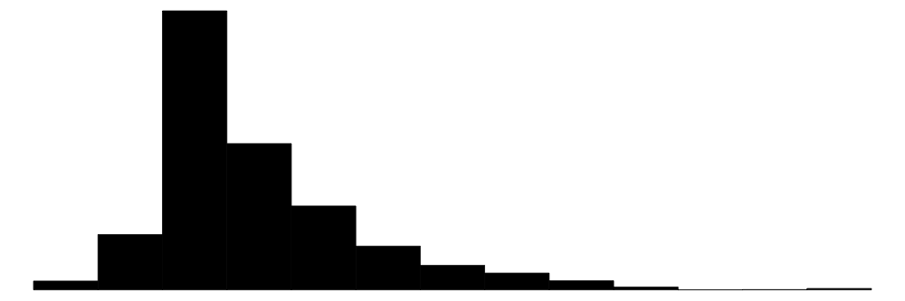
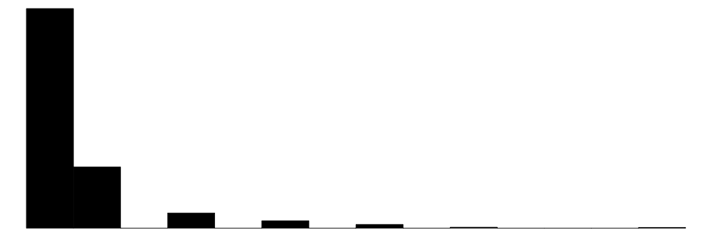
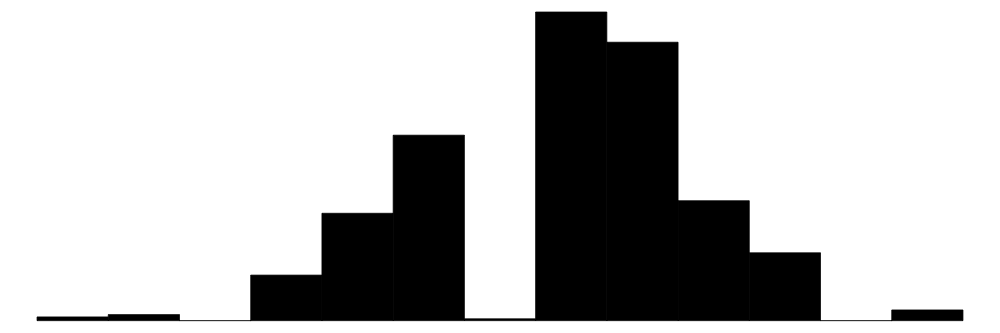
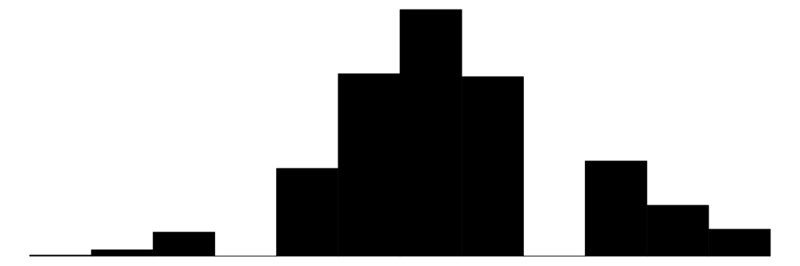

![]()
| Unique | Missing Pct. | Mean | SD | Min | Median | Max | Histogram | |
|---|---|---|---|---|---|---|---|---|
| Возраст респондента | 39 | 0 | 19.2 | 5.0 | 10.5 | 18.5 | 29.5 | |
| hh_inc_imp | 1550 | 0 | 4324.3 | 4006.1 | 21.5 | 3879.8 | 132119.2 | |
| nfam | 13 | 0 | 5.0 | 1.6 | 1.0 | 4.0 | 14.0 |  |
| n_inds | 7 | 0 | 2.5 | 0.9 | 2.0 | 2.0 | 9.0 |  |
| O | 12 | 0 | 0.1 | 0.9 | -3.2 | 0.2 | 1.9 | |
| C | 12 | 0 | -0.4 | 1.0 | -3.7 | -0.5 | 2.0 |  |
| E | 12 | 0 | 0.2 | 0.9 | -2.7 | 0.0 | 2.2 | |
| A | 12 | 0 | -0.1 | 1.0 | -3.2 | -0.2 | 2.2 |  |
| ES | 13 | 0 | 0.2 | 0.9 | -2.4 | 0.2 | 2.3 | |
| N | % | |||||||
| sex | МУЖСКОЙ | 1272 | 52.1 | |||||
| ЖЕНСКИЙ | 1171 | 47.9 | ||||||
| h_edu | 1. Below Secondary | 1318 | 54.0 | |||||
| 2. Secondary | 464 | 19.0 | ||||||
| 3. Vocational | 457 | 18.7 | ||||||
| 4. Higher | 204 | 8.4 | ||||||
| area | Областной центр | 835 | 34.2 | |||||
| Город | 560 | 22.9 | ||||||
| ПГТ | 191 | 7.8 | ||||||
| Село | 857 | 35.1 | ||||||
| employed | 1. Unemployed | 1979 | 81.0 | |||||
| 2. Officially Employed | 464 | 19.0 | ||||||
| poor_health | 1. Normal or Good Health | 2414 | 98.8 | |||||
| 2. Poor or Very Poor Health | 29 | 1.2 | ||||||
| disability | 1. Not Disabled | 2379 | 97.4 | |||||
| 2. Disabled | 64 | 2.6 |
Intra-Family Variability in Non-Cognitive Skills of Siblings During Adolescence and Youth: Insights From the Household Random Intercept Terms
Keywords
non-cognitive skills, within-family variability, big five personality traits, family-niche model, socio-economic status, mixed-effects models
1 Motivation
A family is widely recognized as the primary agent of socialization, serving as the foundation where children internalize values, acquire social norms, and develop their unique personalities. It is within the family environment that the seeds of personality traits, or, as they are called in economics, non-cognitive skills, find their nature and nurture. Only after this foundational stage do institutional factors, such as education and labor markets, come into play as individuals navigate the various transitions of the life course, from childhood to adolescence, youth, and adulthood.
While substantial research in economics and other related disciplines has examined how non-cognitive skills influence key socio-economic outcomes, ranging from educational attainment and labor market performance to health and well-being, the mechanisms underlying the development of these skills remain poorly understood. Specifically, economic research did not go further than acknowledging that these traits are function of both hereditary mechanisms, as well as social milieu. With that respect, there is limited understanding of how family dynamics and individual-specific experiences contribute to the variability in non-cognitive skills among individuals raised in one household, i.e., those who share the same genetic traits and environmental factors.
This study seeks to address this gap by examining the within-family variability in non-cognitive skills between siblings. In addition to the common genetics, by sharing the same parents the siblings do not vary in parental education, occupation, household income, culture, religion, values and norms, and other family-specific characteristics. In other words, the confounding of these characteristics is thus neglected. This allows us to isolate the unique individual behaviors that contribute to the observed differences in non-cognitive skills and risk preferences among siblings.
By focusing on the Big Five traits, which are widely recognized as the most robust and comprehensive framework for understanding individual differences in personality, the study aims to uncover the mechanisms behind these skills and explain the observed differences among individuals who live in the same household and are blood-related siblings. This approach provides a nuanced understanding of the interplay between family environment and individual agency in the development of non-cognitive skills, offering insights with implications for both developmental theory and policy interventions.
2 Problem Statement
To better examine the influence of individual agency on how educational and labor market outcomes affect non-cognitive skills, it is crucial to narrow the focus from the general population to a specific age cohort. For instance, it is not feasible to estimate the impact of employment on non-cognitive skills if the sample of the study includes children aged 10, as they are in the pre-employment stage of life. Moreover, childhood is primarily associated with developmental processes, during which genetic traits may not yet be fully expressed. As such, including children in this analysis would not yield meaningful insights into the relationship between labor market engagement and non-cognitive skills.
Similarly, older cohorts are less suitable for this analysis, as the effects of key life transitions, such as completing basic education, obtaining a university degree, or entering the labor market, are less pronounced and could be diminished in the later stages of life. These transitions, which are critical for shaping non-cognitive skills, tend to occur during youth and diminish in salience as individuals progress through their careers and life stages.
For these reasons, this study focuses on young women and men aged 10 to 29, an age group where transitional effects are most evident, and the influence of major life milestones on non-cognitive skills can be clearly observed.
This study is guided by the central research question: What is the role of family factors in explaining individual variation in non-cognitive skills of siblings? In other words, the purpose of study is to estimate the effect of individually variant characteristics on variation of non-cognitive skills in siblings who share the same family characteristics. To support this primary inquiry, several supplementary analyses are conducted, addressing the following questions:
What are the effects of demographic factors, such as age, sex, and birth order (e.g., being a first-born child), on non-cognitive skills?
Do childhood relationships with parents have lasting effects on the development of non-cognitive skills?
How are changes in non-cognitive skills associated with key life transitions, such as obtaining a university degree, or entering the workforce?
To what extent does being in adverse health status during youth influence non-cognitive skills?
3 Previous Evidence
Much research on the differences in personality in a within-family design attributes them to the birth order and was carried out on the inter-links between biology and psychology. As such, Francis Galton in his seminal investigation of the English scholars found that most of them were first-born, suggesting that older sons get special treatment from the parents that gives them advantage in striving intellectually (Galton, 1874). Psychologist Alfred Adler extended this assumption from intellectual ability to personality, suggesting that first-born, second-born, and later-born children are treated differently by parents, which makes substantial footprint on their character traits: while the first-borns enjoy privileges, they also experience the effect of “dethronement” after other children arrive in the family.
These theories triggered scientific discussion on the effect of birth order on personality traits, with the most notable contribution, namely, family-niche theory, arriving in mid-90s and suggested by Sulloway (Sulloway, 1995, 1996). The theory assumes that due to the causal effect of family dynamics, especially when parental resources are low, the first born is the one benefiting most from the parental investment, having competitive advantage in the number of domains. As the order of birth reflects disparity in age and the associated power, this should determine a niche a child occupies in the family dynamics, which is assumed to translate into stable personality differences between siblings. The overall assumptions are that the first-borns will score higher in the traits associated with dominance, whereas later-borns in those linked to adaptability.
Previous research on the matter produced the mixed evidence, both in support and rejection of Sulloway’s hypothesis. The analysis also extended the study of gender composition of siblings on personality with some studies highlighting no effect (Dudek et al., 2022), while others emphasizing the important role of siblings’ gender on personality formation (Golsteyn & Magnée, 2020). Within-family relations also proved to play a role in the development of non-cognitive traits: the analysis that adopted standard skills production function pointed out at the critical role of parental engagement, namely, the engagement of fathers, on the child’s socio-economic outcomes throughout the life span (Elkins & Schurer, 2020)
Furhermore, there is a number of other individual-variant characterstics within one family that are related to the individual agency and can shape non-cognitive skills. As such, even within families the siblings could be different by their educational attainment, employment status, martial status and child bearing, etc. While there is a significant evidence that non-cognitive skills lead to higher grades at school (Avanesian et al., 2022), affect the decisions of continuing education (Rozhkova & Roshchin, 2021a, 2021b), and participation in the labor market (Avanesian et al., 2024; Zudina, 2022), previous studies explored these effects in the between-individual manner, without accounting for within-family effects. This approach in a way fails to acknowledge that some families have different likelihood in producing different level of non-cognitive skills in children, and the baseline probability of a certain child to have advanced level of a specific non-cognitive skill is different due to some factors that play out exclusively at the family level. This narrative is somewhat in line with the one proposed by “Samuel Bowles and Herbert Gintis. Schooling in Capitalist America. New York” (1976) that inter-generational transition of socio-economic status occurs primarily through non-cognitive mechanisms, with rich families cultivating in their children independence, openness and creativity, and the poor ones - obedience, agreeableness, and conscientiousness in executing the tasks.
4 Data
5 Econometric Verification
In order to assess the outlined research questions, the study adopts a within-family design that econometrically is implemented via mixed-effects (multilevel) models. These models allow for 1) accounting for the repeated nature of the data, as the data on non-cognitive skills was collected in 2016 and 2019, and 2) separate within- and between-family variation in estimating the differences in non-cognitive skills between siblings. This is done through the adoption of random intercept terms, which, instead of holding the means constant across the units of the data, allow them to vary across the individuals (for repeated measures) and families. The analysis is implemented in lme4 package (Bates et al., 2015) of R, an open-source software for statistical analysis. The statistical significance tests of the effect sizes are produced with the help of lmerTest package (Kuznetsova et al., 2017).
6 Results
6.1 Between-Family Variance in Personality
The analysis starts with 5 baseline models, each estimating non-cognitive skills as a function of family and individual id. The model has the following structure:
m_opns_base <- lmer(NCS ~ 1 + (1|family_id) + (1|idind), data = ind_fam)
Where NCS refers to the analyzed non-cognitive skill, representing an intercept-only model. The model partitions the variation in this trait into components attributable to family and individual identifiers. This analysis produces a table of Intra-Class Correlation Coefficients (ICCs), also referred to as Variance Partitioning Coefficients (VPCs). The ICCs represent the proportion of variance in non-cognitive skills explained by specific terms—in this case, family and individual effects. The ICC values provide insight into the degree of clustering within the data. Higher ICCs indicate stronger clustering effects, thereby reinforcing the appropriateness of using a mixed-effects modeling approach to account for these multilevel structures. The results are presented in Table 1.
| Group | ICC | Model |
|---|---|---|
| Individual | 65.9 | Openness |
| Family | 29.1 | Openness |
| Individual | 69.5 | Conscientiousness |
| Family | 26.2 | Conscientiousness |
| Individual | 82.7 | Extraversion |
| Family | 12.2 | Extraversion |
| Individual | 57.4 | Agreeableness |
| Family | 37.2 | Agreeableness |
| Individual | 72.2 | Emotional Stability |
| Family | 22.9 | Emotional Stability |
The findings reveal that all five non-cognitive skills are significantly influenced by family factors, though the degree of influence varies considerably across traits. Agreeableness demonstrates the highest family-level influence, with approximately 37% of its variance attributable to family-level factors. This underscores the critical role of families in shaping interpersonal traits, such as the ability to cooperate, compromise, and collaborate with others.
Openness and emotional stability exhibit family-level influences of around 29% and 23%, respectively. Openness, linked to curiosity and creativity, reflects how family environments may encourage or limit intellectual exploration, while emotional stability highlights the familial role in teaching emotional regulation and stress management.
Conscientiousness follows closely, with 26% of its variance tied to family factors. This finding aligns with the notion that traits related to diligence, organization, and responsibility are influenced by both genetic predispositions and shared family practices.
In contrast, extraversion shows the lowest family-level influence, with just 12% of its variance explained by familial factors. This suggests that extraversion is predominantly shaped by individual agency and experiences outside the family, such as social interactions and personal environments.
Notably, the family-level variance incorporates both genetic and shared environmental influences. While the specific mechanisms remain unclear, the relatively high individual-level variances suggest substantial contributions from personal experiences and non-shared environmental factors. Future research could explore the interplay between genetic predispositions and unique environmental contexts in shaping these traits.
These insights are particularly valuable as they indicate that, while genetic factors are not directly observed in this study, their effects are embedded within the family component. This highlights the pivotal role of familial influences in the development of non-cognitive skills and sets the stage for future research to identify the underlying processes at work.
6.2 Within-Family Variance in Non-Cognitive Skills: How Different Are Siblings From Each Other in Their Non-Cognitive Skills?
The current regression model does not allow for estimating the share of variation in non-cognitive skills between siblings within families. As the model adopts two random intercept terms, namely, for individual id to account for the individual clustering of data due to multiple records for the same respondents, as well as random intercept of family to account for nested nature of siblings within families, the residual term of the model captures both within-family and within-individual variation, while ICC coefficients indicate on share of variance explained by the variability between families and between individuals.
In order to understand within-family variation in non-cognitive skills of siblings, separate models should be fit for each wave. This will remove within-individual variation from the error term, also being a robustness check for understanding the variance due to family-level factors once we partition the data.
| trait | year | ICC (Between Families) | Residual Variance (Within Families) |
|---|---|---|---|
| Openness | 2016 | 30.2 | 69.8 |
| Openness | 2019 | 22.1 | 77.9 |
| Conscientiousness | 2016 | 26.4 | 73.6 |
| Conscientiousness | 2019 | 25.2 | 74.8 |
| Extraversion | 2016 | 15.1 | 84.9 |
| Extraversion | 2019 | 8.8 | 91.2 |
| Agreeableness | 2016 | 38.8 | 61.2 |
| Agreeableness | 2019 | 33.5 | 66.5 |
| Emotional Stability | 2016 | 26.7 | 73.3 |
| Emotional Stability | 2019 | 25.3 | 74.7 |
6.3 Socio-Demographic Factors
In this section we extend our analysis to socio-demographic controls that should approximate a family environment while a child was growing. These variables refer to age, age squared, sex, a dummy of being a first-born child, to test the assumption of the privileges associated with being the first recipient of parental investments, as well as a dummy indicating very close relation with the parents (a tfather and mother separately) in the childhood. As the dummy for a close relationship with mothers in childhood did not produce significant effect in any of the five traits and resulted in the poorer model fit, the variable was dropped and the models were re-estimated. This could be potentially explained by the fact that most of respondents reported they were close with their mothers in childhood, which is logical given that mothers have a stronger connection to children in early childhood as the main bearers. With that respecxt, the equation had the following code:
NCS ~ age + I(age^2) + sex + first_born + relations_with_father + male_siblings_perc + disability + (1 | family_id) + (1 | idind), data = ind_fam`
The models are presented in Table 2.
| Openness | Conscientiousness | Extraversion | Agreeableness | Emotional Stability |
|---|---|---|---|---|---|
(Intercept) | 0.190 | -0.638*** | 0.186 | -0.061 | 0.048 |
(0.151) | (0.158) | (0.159) | (0.162) | (0.151) | |
age | -0.006 | -0.005 | -0.009 | -0.016 | 0.015 |
(0.012) | (0.013) | (0.013) | (0.014) | (0.012) | |
I(age^2) | 0.000 | 0.000 | 0.000 | 0.000 | 0.000 |
(0.000) | (0.000) | (0.000) | (0.000) | (0.000) | |
sexЖЕНСКИЙ | 0.138+ | 0.226** | 0.143+ | 0.135+ | -0.239** |
(0.071) | (0.078) | (0.080) | (0.072) | (0.074) | |
first_born | -0.080+ | 0.003 | -0.078 | 0.062 | 0.001 |
(0.047) | (0.051) | (0.051) | (0.048) | (0.047) | |
male_siblings_perc | -0.076 | 0.058 | 0.054 | -0.061 | 0.213* |
(0.092) | (0.100) | (0.099) | (0.096) | (0.094) | |
relations_with_father2. Very close | 0.058 | 0.061 | 0.202*** | 0.153** | 0.024 |
(0.049) | (0.053) | (0.050) | (0.053) | (0.049) | |
disability2. Disabled | -0.058 | 0.013 | -0.186* | -0.080 | -0.199* |
(0.078) | (0.081) | (0.081) | (0.086) | (0.078) | |
obtaining_higher_edu2. Obtaining or obtained | 0.042+ | 0.018 | 0.008 | 0.020 | -0.025 |
(0.025) | (0.025) | (0.025) | (0.027) | (0.024) | |
employed2. Officially Employed | 0.025 | 0.035 | -0.001 | -0.010 | 0.001 |
(0.025) | (0.025) | (0.025) | (0.027) | (0.024) | |
SD (Intercept idind) | 0.731 | 0.802 | 0.825 | 0.730 | 0.755 |
SD (Intercept family_id) | 0.477 | 0.484 | 0.341 | 0.587 | 0.418 |
SD (Observations) | 0.203 | 0.206 | 0.209 | 0.225 | 0.201 |
Num.Obs. | 2443 | 2443 | 2443 | 2443 | 2443 |
R2 Marg. | 0.016 | 0.015 | 0.020 | 0.016 | 0.050 |
R2 Cond. | 0.950 | 0.954 | 0.949 | 0.947 | 0.951 |
AIC | 4164.1 | 4408.6 | 4323.3 | 4542.4 | 4135.5 |
BIC | 4239.5 | 4484.0 | 4398.7 | 4617.8 | 4210.9 |
The output suggests that age does not produce a statistically significant effect on any of the personality traits, which is expected due to 1) the limited age range of the study and 2) the within-family design of the analysis, which separates within- and between-family variation in non-cognitive skills. Interestingly, the effect of being first-born is evident only with respect to openness. This finding aligns with the family-niche theory, which suggests that younger siblings are often more creative and open to new experiences. In this context, being first-born reduces openness to new experiences by 8% of a standard deviation (SD), highlighting the nuanced role of birth order in personality development and in the acquisition of socially desirable skills.
The model also identifies a significant effect of sex, with female youth consistently outperforming male youth across most non-cognitive traits. Specifically, female youth are more open to new experiences, with an effect size of 13.8% of SD; more conscientious, with an effect size of 22.6% of SD; and more extraverted and agreeable, with effect sizes of 14.3% and 13.5% of SD, respectively.
The only trait where female siblings show a notable disadvantage compared to their brothers is emotional stability, where females experience a significant negative effect of 23.9% of SD. This finding suggests that, while women excel in several personality traits, emotional stability may be more susceptible to gendered socialization or environmental influences.
The inclusion of the share of male siblings (male_siblings_perc) adds an important dimension to understanding personality traits, particularly emotional stability. A higher proportion of male siblings in the family is associated with a significant positive effect on emotional stability, increasing it by 21.3% of SD. This suggests that growing up in a male-dominated sibling environment might foster resilience or emotional regulation in youth.
Obtaining higher education has a small but statistically marginally significant positive effect on openness, increasing it by approximately 4.2% of SD. However, it does not show any significant effects on other personality traits. Employment status, meanwhile, does not produce significant effects on any of the traits analyzed, suggesting that the relationship between employment and non-cognitive skills might require further investigation with alternative measures or mediating factors.
Finally, having a very close relationship with the father during childhood yields significant benefits for agreeableness, with an effect size of 15.3% of SD, and extraversion, with an effect size of 20.2% of SD. The strong influence of a close paternal relationship underscores the role of family dynamics in shaping personality traits.
Disability is another important factor in shaping the personality of siblings in adolescence and youth. It has adverse impacts on extraversion and emotional stability, reducing these traits by approximately 18.6% and 19.9% of SD, respectively. These findings highlight the complex interplay between familial, demographic, and gender-related factors in the development of non-cognitive skills.
7 Decomposition of Variance in Non-Cognitive Skills by Individual Factors
Make a step-by-step addition to the baseline model of the individual level predictors to see what they add to the fixed effects level variance (ie reduction in the ICC for idind).
start with age and age squared model then add sex than add first_born than add relations_with_father than gender composition of siblings than disability
8 Within-Family Effects of Non-Cognitive Skills on Completing Higher Education and Finding a Job
lets see if non-cognitive skills operate separately on the achievement of young people in education and labor market
as two siblings share the same position in socio-economic ladder and starting point in life, in terms of not varying in the parental occupation, education, and household income, the effect of non-cognitive skills on the educational attainment and employment should be similar for both siblings and would absorb the effect of “initial socio-economic conditions” such as observed and unobserved effects of family background that affect the educational attainment and employment of children due to transition of advantage or disadvantage through the inter-generational mechanisms.
we can do the analysis separately for 2 waves
9 Discussion
One of the very important findings refers to the fact that between-family factors play a critically important role in the individial variation in non-cognitive skills. Depending on the skill, up to 40% of variation in non-cognitive skills can be attributed to family-level factors. With that respect we wanted to test the role of individual effects in the sample of siblings. While sex was a constant predictor of individual differences in the non-cognitive skills of siblings, other variables failed to produce consistent and robust effects.
In line with family-niche theory, first-borns were proved to be less open, as creativity and appreciation of externalities and risk taking is rather developed in later-born children (Paulhus et al., 1999). While first-borns are always perceive dby parents as those who have a higher responsibility over the younger siblings and dominate over them, the later-borns develop social strategies that could help them get what they want.
Interestingly, a within-family dynamics with respect to the gender composition of siblings also proved to play role: controlling for a gender of an individual, the study confirms that growing in the families with male-dominant siblings results in higher emotional stability, which potentially indicates at cultural norms and views on gender at the family level that cultivate. Gender composition of siblings in many ways reiterates the effect of gender, however, the individual gender was showing a consistently significant effect throughout, while the effect of gender composition of siblings (with higher values of the ratio indicating dominance of boys and young men), controlling for the individual gender, produced the effects only on emotional stability.
Interesting finding refers to the lack of the effects of obtaining higher education and finding a job. Insignificant effect of employment across all 5 domains of personality, and limited effect of having higher education on openness rather suggest that siblings in higher-education and employment age belonging to the same family do not differ in the baseline probabilities of having higher education or being employed. Further, this age (early 20s) is rather known as the one when personality is rather fixed and all the life transition changes have a little or no effect on personality (Cobb-Clark & Schurer, 2012, 2013). Finally, even previous studies highlighted the effect of higher education on non-cognitive skills, pointing out that it rather operates through the exposure to university life, not through the curricular mechanisms (Kassenboehmer et al., 2018). With that respect out findings that being in the process or having obtained higher education results in the increased openness to new experiences is logical.
10 Research Limitations
The major limitation of the study refers to inability to separate hereditary mechanisms behind non-cognitive skill formation from those produced by common social environment. Though this could have strong implications on policies for education and labor market on how to nurture these skills from childhood, only a sample of mono-zygotic twins would allow to completely ignore the role of genetic factors in development of non-cognitve skills.
11 References
Avanesian, G., Borovskaya, M., Masych, M., Dikaya, L., Ryzhova, V., & Egorova, V. (2024). How Far Are NEET Youth Falling Behind in Their Non-Cognitive Skills? An Econometric Analysis of Disparities. Economies, 12(1), 25. https://doi.org/10.3390/economies12010025
Avanesian, G., Borovskaya, M., Ryzhova, V., Kirik, V., Egorova, V., & Bermous, A. (2022). Can we improve learning outcomes of schoolchildren from the poorest families by investing into their non-cognitive skills? Causal analysis using propensity score matching. Voprosy Obrazovaniya / Educational Studies Moscow, 1, 13–53. https://doi.org/10.17323/1814-9545-2022-1-13-53
Bates, D., Maechler, M., Bolker, B., & Walker, S. (2015). Fitting linear mixed-effects models using lme4. 67. https://doi.org/10.18637/jss.v067.i01
Cobb-Clark, D. A., & Schurer, S. (2012). The stability of big-five personality traits. Economics Letters, 115(1), 11–15. https://doi.org/10.1016/j.econlet.2011.11.015
Cobb-Clark, D. A., & Schurer, S. (2013). Two Economists’ Musings on the Stability of Locus of Control. The Economic Journal, 123(570), F358–F400. https://doi.org/10.1111/ecoj.12069
Dudek, T., Brenøe, A. A., Feld, J., & Rohrer, J. M. (2022). No Evidence That Siblings’ Gender Affects Personality Across Nine Countries. Psychological Science, 33(9), 1574–1587. https://doi.org/10.1177/09567976221094630
Elkins, R., & Schurer, S. (2020). Exploring the role of parental engagement in non-cognitive skill development over the lifecourse. Journal of Population Economics, 33(3), 957–1004. https://doi.org/10.1007/s00148-020-00767-5
Galton, F. (1874). English men of science their nature and nurture / by francis galton. https://doi.org/10.5962/bhl.title.29770
Golsteyn, B. H. H., & Magnée, C. A. J. (2020). Does sibling gender affect personality traits? Economics of Education Review, 77, 102016. https://doi.org/10.1016/j.econedurev.2020.102016
Kassenboehmer, S. C., Leung, F., & Schurer, S. (2018). University education and non-cognitive skill development. Oxford Economic Papers, 70(2), 538–562. https://doi.org/10.1093/oep/gpy002
Kuznetsova, A., Brockhoff, P. B., & Christensen, R. H. B. (2017). lmerTest package: Tests in linear mixed effects models. 82. https://doi.org/10.18637/jss.v082.i13
Paulhus, D. L., Trapnell, P. D., & Chen, D. (1999). Birth Order Effects on Personality and Achievement Within Families. Psychological Science, 10(6), 482–488. https://doi.org/10.1111/1467-9280.00193
Rozhkova, K., & Roshchin, S. (2021a). Non-cognitive characteristics and higher education choices. Voprosy Obrazovaniya / Educational Studies Moscow, 4, 35–73. https://doi.org/10.17323/1814-9545-2021-4-35-73
Rozhkova, K., & Roshchin, S. (2021b). The impact of non-cognitive characteristics on the higher education choice-making: An economist perspective. Voprosy Obrazovaniya / Educational Studies Moscow, 3, 138–167. https://doi.org/10.17323/1814-9545-2021-3-138-167
Samuel Bowles and Herbert Gintis. Schooling in Capitalist America. New York: Basic Books, 1976. (1976). Politics & Society, 6(4), 516–516. https://doi.org/10.1177/003232927600600407
Sulloway, F. J. (1995). Birth Order and Evolutionary Psychology: A Meta-Analytic Overview. Psychological Inquiry, 6(1), 75–80. https://doi.org/10.1207/s15327965pli0601_15
Sulloway, F. J. (1996). Born to rebel: Birth order, family dynamics, and creative lives (p. 653). Pantheon Books.
Zudina, A. (2022). Non-cognitive skills of NEET youth in russia. Voprosy Obrazovaniya / Educational Studies Moscow, 4, 154–183. https://doi.org/10.17323/1814-9545-2022-4-154-183